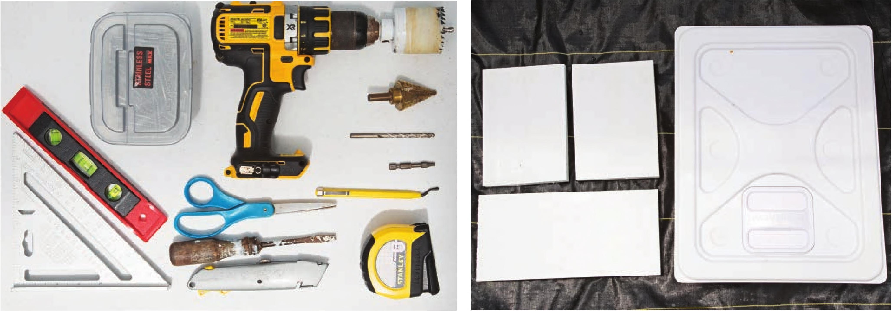

HOW TO BUILD A RECIRCULATING TOP DRIP BUCKET SYSTEM This build guide only shows one top drip bucket, but this bucket design, irrigation delivery system, and drainage setup could be expanded to accommodate many buckets. MATERIALS & TOOLS Frame Irrigation 1 2 x 12" x 8' lumber 4' V/i PVC 1 gal. Whitewater-based 1 1 Vi rubber cap latex primer, sealer, with clamp and stain blocker (KILZ 2 LATEX) 11b. exterior screws Buckets 2 Square bucket 1 %" elbow 1 %" gasket Substrate Expanded clay pellets 1 IV2" rubber elbow with clamps 2 IV2" EMT 2-hole strap 20 gal. Reservoir 5' W black vinyl tubing 1 Submersible water pump, 550 GPH 3 %" EMT 2-hole strap 1 Zip tie 2 VC double barbed connectors 4' W black vinyl tubing 1 Outlet timer Tools Circular saw Hacksaw Paint roller and/or paintbrush Level Rafter square Tape measure Permanent marker Drill Vu" drill bit Drill bit matching screws Step drill bit with Vs" increments from VC to 1 W Deburring tool 2" hole drill bit Heavy-duty scissors Irrigation line hole punch Optional Trellis netting, 5 x 30', 3V2" mesh 2 Ball valves (shut off valves) 2 Irrigation stakes Safety Equipment Work gloves Eye protection HYDROPONIC GROWING SYSTEMS 85
